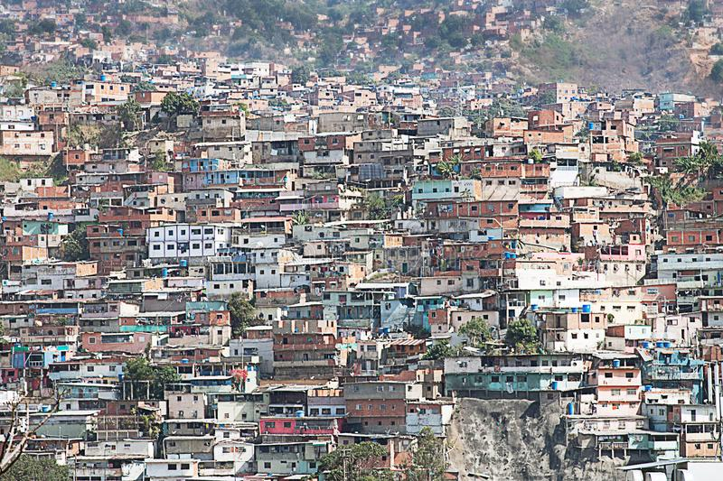

Lionel Messi is geboren in Argentinië in een krottenwijk in Rosario. Lionel groeide op in heel arm gezin, hij was het derde kind in een gezin van vier.
Zijn vader Jorge werkte in een staalfabriek en zijn moeder Celia op een werkplaats. Zijn vader heeft Catalaanse roots en zijn moeder Italiaanse roots.
Messi had een hele sterke band met zijn oma, want die bracht hem elke wedstrijd en training. Zijn oma overleed op zijn 11de en dat vond hij vreselijk.
Hij is hierdoor ook katholiek geworden. Op 5 jarige leefdtijd begon hij bij de de buurtclub Grandoli FC, op zijn 7de ging hij naar Newell's old Boys .
Na 2 jaar werd hij door Barcelona ontdekt, en mocht daar in de jeugd spelen.
Krottenwijk
Een sloppenwijk is een wijk waar mensen gaan wonen als ze in geldnood zijn. De woningen bestaan meestal uit restafval van andere gebouwen.
Er zijn in verschillende werelddelen sloppenwijken maar vooral in Zuid-Amerika in Brazilië en Argentinië. Messi woonde dus in een krottenwijk in Rosario.
Lionel ging altijd voetballen op straat, maar ze oma zei altijd opletten voor de gevaarlijke mannen.
Dit deed Lionel ook wan hij was best een slimme jongen vergeleken met de mensen om hem heen. Hij luisterde altijd heel erg goed naar zijn oma, want zij was zijn alles.